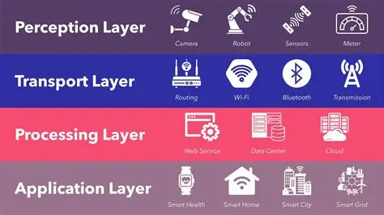
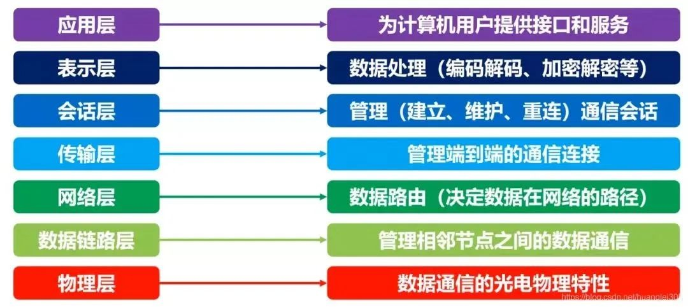
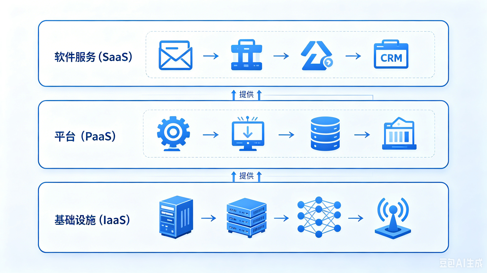
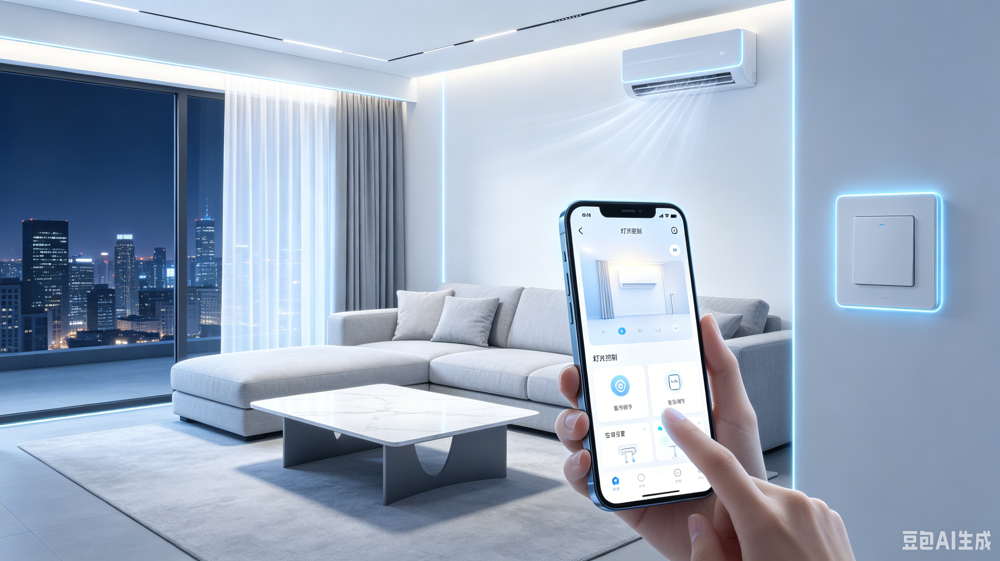
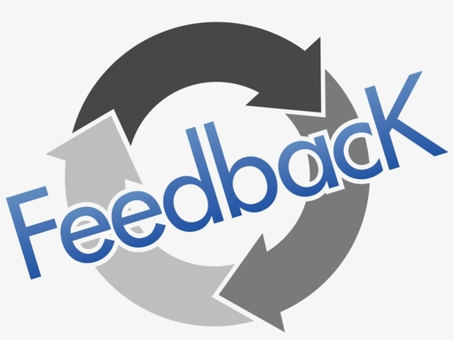

IoT 工业4.0架构解析
✅ 作业清单
- 理解 IoT 四层架构概念
- 研究感知层技术与应用
- 分析网络层通信协议
- 探索平台层数据处理能力
- 调研应用层实际案例
- 撰写原创思考与行业分析
📖 引言

图1：IoT 工业4.0架构整体示意图
物联网（Internet of Things, IoT）是指通过各种信息传感器、射频识别技术、全球定位系统等装置与技术，实时采集任何需要监控、连接、互动的物体或过程，通过网络接入实现物与物、物与人的泛在连接，实现对物品和过程的智能化感知、识别和管理。工业4.0是以智能制造为主导的第四次工业革命，其核心是通过 IoT 技术实现生产过程的数字化、网络化和智能化。
在我看来，IoT 不仅是技术的堆砌，更是连接物理世界与数字世界的桥梁。它让原本“沉默”的设备能够“说话”，让数据成为驱动决策的核心力量。在工业4.0时代，IoT 架构的设计质量直接决定了企业数字化转型的成败。
🏗️ 四层架构逐段解析
第一层：感知层（Sensors + Controller）
图2：感知层 - 各类传感器与控制器设备
感知层是 IoT 架构的基础，负责采集真实世界的数据。主要包括：
- 传感器类型：温度传感器、湿度传感器、压力传感器、位置传感器、加速度传感器、光敏传感器等
- 控制器：PLC（可编程逻辑控制器）、MCU（微控制单元）、嵌入式系统
- 数据采集：实时监测设备状态、环境参数、生产过程数据
- 边缘计算：在数据源头进行初步处理和过滤，减少传输负担
典型应用：智能工厂中的温度监控系统、物流追踪中的 GPS 定位、智能家居中的环境监测等。
感知层就像是 IoT 系统的“感官器官”。我认为这一层的关键不在于传感器的数量，而在于数据的准确性和可靠性。在实际应用中，我们经常遇到传感器漂移、信号干扰等问题，这些都会影响后续的数据分析质量。因此，传感器的校准和维护同样重要，这往往被忽视。
第二层：网络层（Communication Modules）

图3：网络层 - 各类通信技术与协议（OSI七层模型）
网络层负责将感知层采集的数据传输到云端或数据中心。主要通信技术包括：
- 短距离通信：Wi-Fi、蓝牙（Bluetooth）、ZigBee、NFC
- 长距离通信：4G/5G 移动网络、LoRa（低功耗广域网）、NB-IoT
- 有线通信：以太网、RS485、CAN总线
- 通信协议：MQTT、CoAP、HTTP/HTTPS、AMQP
技术选择依据：传输距离、功耗要求、带宽需求、成本预算、安全性要求。
网络层是 IoT 系统的“神经系统”。我发现不同场景对网络技术的需求差异很大：智能家居适合 Wi-Fi 和蓝牙，因为距离短且带宽要求高；而智慧农业则更适合 LoRa，因为它功耗低、覆盖范围广。选择合适的通信技术需要在性能、成本和功耗之间找到平衡点，这是一个需要深思熟虑的决策过程。
第三层：平台层（Cloud + Social Networking）

图4：平台层 - 云平台与数据处理中心
平台层是 IoT 系统的“大脑”，负责数据存储、分析和处理。主要功能包括：
- 数据存储：云数据库、时序数据库、大数据存储系统
- 数据处理：实时流处理、批量数据分析、机器学习算法
- 设备管理：设备注册、状态监控、固件升级、远程控制
- API 服务：提供标准化接口，支持第三方应用集成
- 安全管理：身份认证、数据加密、访问控制
主流平台：AWS IoT、Azure IoT、阿里云 IoT、华为云 IoT、ThingsBoard 等。
平台层是我认为最具挑战性的部分。它不仅需要处理海量数据，还要保证系统的稳定性和可扩展性。我注意到很多企业在选择云平台时过于关注价格，而忽略了平台的生态系统和技术支持。实际上，一个好的 IoT 平台应该能够提供丰富的开发工具、完善的文档和活跃的社区，这样才能降低开发难度，加快产品上市速度。
第四层：应用层（Software Applications）
应用层面向最终用户，提供具体的业务功能。主要应用场景包括：
- 智能制造：生产监控、质量控制、预测性维护、供应链优化
- 智慧城市：交通管理、环境监测、公共安全、能源管理
- 智慧医疗：远程监护、健康管理、医疗设备追踪
- 智慧农业：精准灌溉、病虫害预警、产量预测
- 智能家居：安防监控、能源管理、家电控制
核心价值：提升效率、降低成本、优化体验、创造新商业模式。
应用层是 IoT 价值的最终体现。我认为最好的应用不是技术最复杂的，而是最能解决用户痛点的。例如，一个简单的水位监测系统可能比复杂的 AI 算法更有价值，如果它能及时提醒农民灌溉的话。应用设计应该以用户为中心，界面简洁直观，功能实用高效。

图5：应用层 - IoT应用场景示例（一）

图6：应用层 - IoT应用场景示例（二）
闭环反馈机制

图7：闭环反馈 - 数据循环与持续优化流程
闭环反馈是 IoT 系统的核心特征，形成完整的数据循环：
- 数据采集：从真实世界采集数据（传感器 → 感知层）
- 数据传输：将数据传输到云端（网络层）
- 数据分析：在平台层进行处理和分析
- 决策生成：基于分析结果生成优化策略
- 执行反馈：通过应用层执行决策，反作用于真实世界
- 持续优化：根据反馈效果不断调整和优化系统
价值体现：实现从“被动响应”到“主动预测”的转变，形成数据驱动的持续改进循环。
闭环反馈是整个 IoT 架构的灵魂所在。没有闭环，IoT 就只是一个数据采集系统，无法产生真正的业务价值。我认为闭环的关键在于“速度”和“准确性”：反馈越快，系统响应越及时；决策越准确，优化效果越明显。这需要各层之间的紧密协作和高效配合。
💡 原创思考：行业问题分析
通过对 IoT 行业的深入研究，我发现当前存在以下几个关键问题：
- 数据孤岛问题：不同厂商的设备使用不同的通信协议和数据格式，导致系统之间难以互联互通。这就像每个人说着不同的语言，无法有效沟通。
- 安全隐私担忧：随着 IoT 设备数量的激增，网络安全威胁也日益严重。黑客可以通过入侵 IoT 设备获取敏感数据，甚至控制关键基础设施。
- 标准化缺失：IoT 行业缺乏统一的标准和规范，导致产品兼容性差，增加了系统集成和维护的难度。
- 人才缺口：IoT 涉及多个技术领域（硬件、网络、软件、AI），既懂硬件又懂软件的复合型人才非常稀缺。
- 投资回报不明确：很多企业对 IoT 项目的 ROI（投资回报率）持怀疑态度，因为前期投入大，见效周期长。
我的建议：行业需要加强合作，推动标准制定；企业应该从小规模试点开始，逐步扩大应用范围；教育机构应该加强跨学科人才培养。
🎯 IoT 案例 + 个人点评
案例一：西门子数字化工厂
西门子在其安贝格工厂实施了全面的 IoT 解决方案：
- 部署超过 1000 个传感器监测生产设备状态
- 使用 5G 网络实现高速数据传输
- 建立云端数据分析平台，实时监控生产效率
- 实现预测性维护，设备故障率降低 70%
- 生产效率提升 8 倍，产品质量达到 99.9988%
西门子的案例展示了 IoT 在制造业的巨大潜力。我最欣赏的是他们将 IoT 技术与精益生产理念相结合，不仅提高了效率，还保证了质量。这说明 IoT 不是孤立的技术，而是需要与企业管理理念深度融合才能发挥最大价值。
案例二：阿里巴巴菜鸟智慧物流
菜鸟网络构建了智能化的物流 IoT 系统：
- 使用 RFID 标签追踪包裹位置
- 部署智能仓储机器人自动分拣货物
- 利用大数据分析优化配送路线
- 实现"当日达"和"次日达"服务
- 物流效率提升 50%，成本降低 30%
菜鸟的案例让我看到了 IoT 在物流行业的革命性影响。通过 IoT 技术，物流从"黑盒"变成了"透明盒"，消费者可以实时看到包裹的位置和状态。这种透明度不仅提升了用户体验，也倒逼物流企业提高服务质量。我认为这是 IoT 改变商业模式的典型案例。
🔮 总结与展望
IoT 工业4.0架构正在深刻改变各行各业：
- 预计到 2030 年，全球 IoT 市场规模将达到 1.5 万亿美元
- 5G 技术的普及将进一步推动 IoT 应用的发展
- AI 与 IoT 的结合（AIoT）将成为新的趋势
- 边缘计算的兴起将使 IoT 系统更加高效和可靠
- 区块链技术在 IoT 安全领域的应用前景广阔
通过学习 IoT 工业4.0架构，我深刻认识到这是一个充满机遇和挑战的领域。未来，我相信 IoT 将更加普及和智能化，从工业生产到日常生活，从城市管理到环境保护，IoT 都将发挥重要作用。作为学生，我们需要不断学习新技术，培养跨学科思维，为迎接 IoT 时代的到来做好准备。同时，我们也要关注 IoT 带来的伦理和社会问题，如隐私保护、数据安全、就业影响等，确保技术发展造福人类。
🔨 制作过程记录
第一步：资料收集与研究
通过互联网搜索 IoT 工业4.0相关资料，阅读专业文章和技术文档，了解四层架构的基本概念和应用案例。
参考资料来源：
- 物联网技术白皮书
- 工业4.0相关研究报告
- 各大 IoT 平台官方文档
- 行业案例分析文章
第二步：内容整理与分类
将收集的资料按照四层架构进行分类整理，区分客观资料和主观观点，确保内容的准确性和完整性。
第三步：网页结构设计
参考之前 week 作业的排版格式，设计页面结构，包括导航栏、作业清单、内容区域等。
第四步：内容编写与排版
使用 HTML 和 CSS 编写网页内容，添加 info-box 样式区分客观资料和主观观点，确保页面美观易读。
第五步：测试与优化
检查页面在不同浏览器中的显示效果，修复样式问题，优化用户体验。